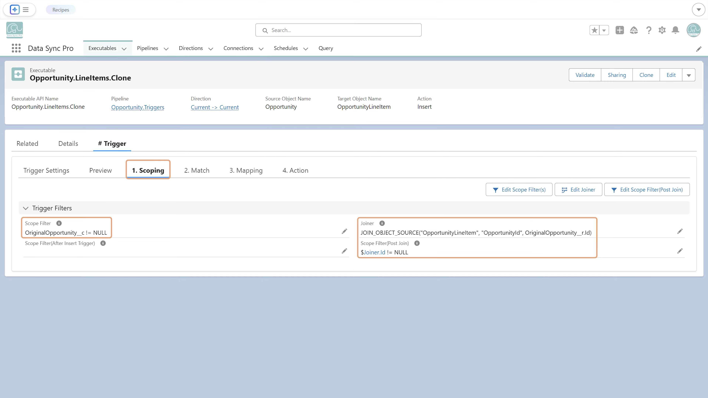

A Scope Filter is a formula-based condition used in the Scoping step to decide which source records continue through execution.
- A Scope Filter can return TRUE/FALSE to include/exclude records, or raise an error with the
ERROR() function when used as a validation rule.
- Scope Filters are evaluated in sequence, allowing layered logic at different levels:
- Pipeline Scope Filter — a global pre-filter applied across all Executables in a Pipeline.
- Executable Scope Filter
— the main condition for a single Executable.
- Trigger Scope Filters
— event-specific filters for #Trigger Executables (e.g., Before Insert, After Update).
- Post-Join Scope Filter — applied after joins, for additional refinement of enriched data.
Together, Scope Filters give precise, layered control — ensuring only relevant records move forward, while supporting validation and filtering at every stage.
